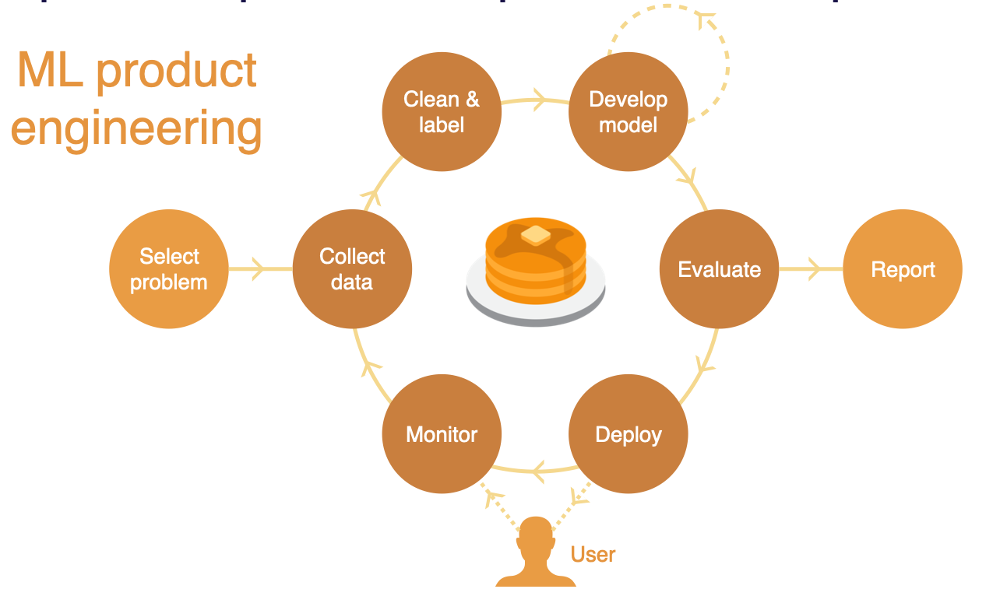
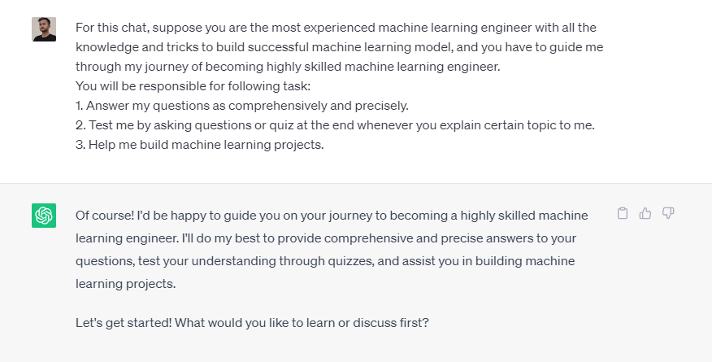
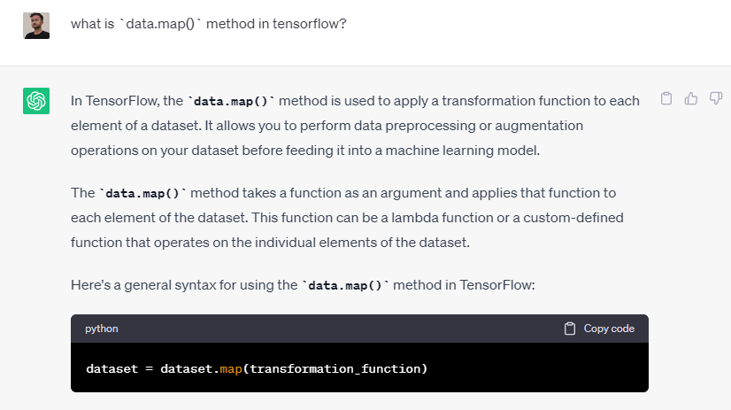
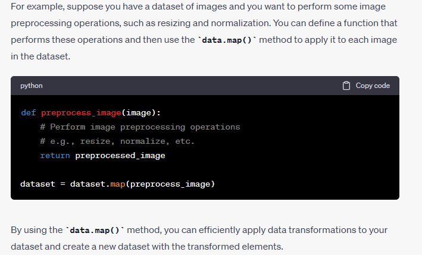
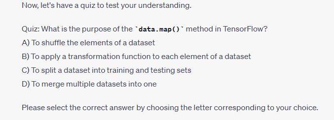
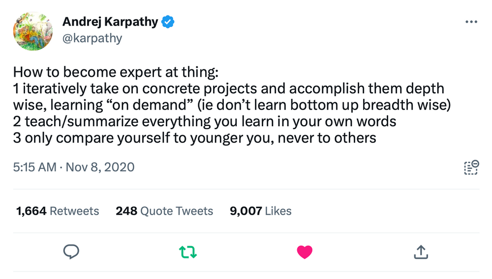

(env) saugat: brain/cerebral cortex/machine learning-AI
Disclaimer : This post is not written or edited by chatgpt or any AI tool 😁
Pheww! The world has seen the tremendous impact of large language models(LLMs) like gpt-3.5 or gpt 4 in recent times. There has been new emerging fields like prompt engineering, LLMOps which was never seen before. The foundation for all these emerging technology has always been machine learning and software engineering. To be more specific Natural language processing and its applications augmented by different software infrastructure and data.
The topic of LLMs can be a different blog post. Lets get back to our main topic.
Here is little background: I am mechanical engineering graduate of 2022 from Institute of engineering(IOE), TU Nepal. Having worked as design and CFD engineer with couple of startups in automotive industry in Nepal for almost 2 years, (I even started racing team in my college: Team Shireto) I decided to switch to world of machine learning and AI in march of 2023. Learning new things is always exciting for me. One of the habits or instinct that you need to learn when you come from engineering background is learning the hard concepts quickly and being able to create something valuable out of it aka solving an engineering problem. The vast application of machine learning in different industry ranging from automotive to finance to healthcare and so many more is one of the reason behind my focus on machine learning to solve engineering problems. You are not limited to a certain domain when it comes to applying machine learning in contrast with the field I was previously focusing on.
So how did I get started with learning machine learning in 2023?
I went through internet and found tons of free resources. As I couldn’t afford to pay for most of the online courses these free resources are like diamonds for me. Damn! we live in a world where we can learn anything for free. All those readings boiled down to this curriculum which I created for myself to become a self taught ML engineer.
One of the main challenge to get started with machine learning was programming. Maths was not a big problem as my engineering degree covered all the required maths foundation for machine learning.
Let me list down courses in a format that I am following during this journey of becoming an ML practitioner.
Why this course?
Hmm… So this is the only course that I paid for. Learning something new comes with lot of resistance in the beginning. I have fell into enroll and never see the course again loop so many times before when I wanted to learn programming, therefore I decided to pay for this course so I would push myself to learn consistently and finish the course start to end, which I eventually did in almost 2 months. This course help me build my foundation on programming as it focuses on run the code approach and project based approach to learn programming.
I learnt about python as required for me to get started for using specialized python based packages for ML & data science like Numpy, pandas, matplotlib and scikitlearn. During the course I build three projects which I will write about in my future blog. In summary, I worked on heart disease classification project, bulldozer auction price prediction project and dog breed identification project(using tensorflow). To be honest most of the things went over my head while working on these projects. But I worked hard and made sure I finish the course no matter what. I watched videos on loop, searched internet, interacted with community built around the course and asked ChatGPT to digest the content and ingest the concept into my memory.
To understand more about computer science and programming in general, I joined this course on free version. I haven’t finished it yet. As the course problem set are quite challenging and takes time. I am huge fan of interleaving, which basically means interleaving between concepts in different domains or subject to learn proactively. So during my boot camp, I interleaved between courses to learn effectively. But how? I will write a another blog post on this 😂.
This course focuses on fundamentals of computer science from binary to memory, from arrays to algorithms and different programming language like python, C, HTML, CSS, Javascript & SQL. Hopefully I will be able to finish this course very soon.
- Machine learning specialization by Deeplearning.ai
This has to be the best among all the course in my list. Wait not only on my list but whole courses on ML or engineering in the whole world. I became a huge fan of Andrew when I joined this course. The way he explained the concepts from basics and visualize all the fundamental concepts like gradient descent, cost function, evaluation metrics, neural network, Random forest from scratch is extraordinary. The code implementation of ML algorithms from scratch was the best part of this course. Talking about interleaving, while working on my classification problem during boot camp I joined Andrew’s course to understand the underlying concepts by watching the videos on logistic regression and classification. Still I haven’t finished all the courses in this specialization. But whatever I have learned so far has been so fruitful to build my intuition for machine learning.
This is the toughest course among all for me. Part of the reason is the book that I am following alongside the course. The book and the course implements top to bottom approach when it comes to learning, which is unusual and unique when comparing to all other courses. What does that mean? Basically top to bottom approach is to start learning by seeing the application of the code and getting your model running before actually going deep inside the theory and the behind the scenes of the algorithms, which is completely opposite to way it is taught the machine learning specialization. There are two part in this course. One is deep learning foundations another is deep learning foundations to stable diffusion.
I am currently on part one where I have finished first four lesson where I learned about getting started with neural network, getting your model to production aka building ml based web app and basic NLP.
This has to be bring it all together course where you will not learn how to write your own model or creating training and validation sets but you will learn how to build products powered by ML. One of the main concept or eye opener for me during this course was that the training of models is starting to become commoditized. I learnt about different tools like huggingface that you can use to deploy state-of-the-art models in few lines of code. This is the most exciting course in the list where you focus on learning ML product engineering.

- ChatGPT
Well ChatGPT is more off a tool to learn and search about some topics and get a quick read rather than searching the internet. During my interaction with ChatGPT, I am focusing to write good prompts so that I can get what I want from the GPT3.5 model. It helps with quick example of code and ask MCQ related to the explanation. 



- The missing semester of your CS education
This course teaches about computer ecosystem literacy aka the tools you need to use during your career as a software engineer or developer. It has all the necessary topic that you will encounter during the journey of becoming a developer and helps with saving time using the tools and concepts like shell, command line interface, data wrangling, version control, debugging & profiling and more.
Alongside following the course I think it is also important to look around the community and follow top ML practitioner who share their knowledge and experiences through blogs, podcast and tweets.
Here is the list of ML practitioner who have influenced me a lot (list of practitioner who are actively writing, tweeting & sharing their learnings)
And of course Andrew Ng is my favorite 👍
I feel like each subtopic in this blog can be converted into another blog post and that blog post’s subtopic into another in form of nested blogs. In future, I will come up with more blogs sharing about my learnings, practices and mistakes along the way. I would love to hear from other people who might read my blog and share their feedback on how can I learn better and get better in Machine learning & AI. Now, alongside these course I will start building my own personal projects, contributing to opensource and eventually developing & deploying ML(or LLMs😉) powered products.
Ending this blog with a tweet from Andrej. 